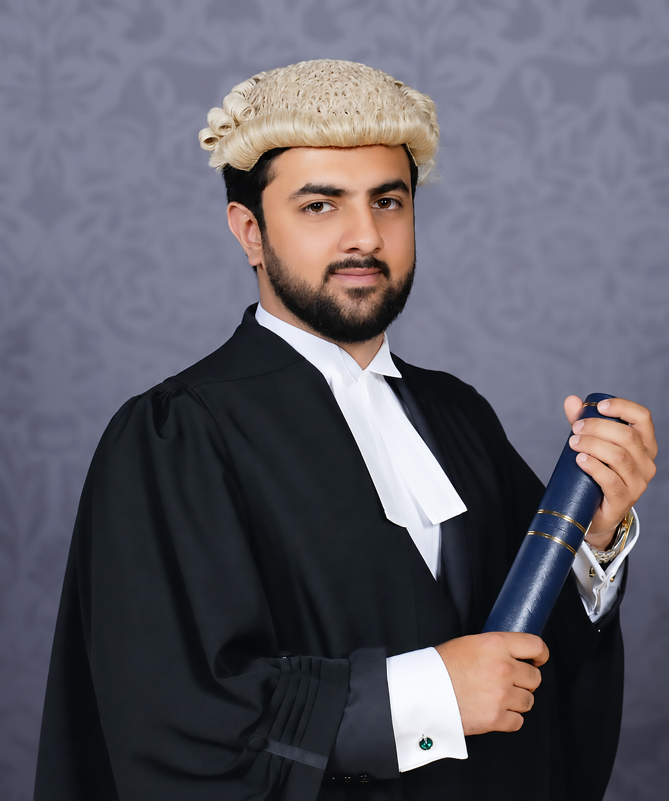

Legal AI
Legal AI Reviewer
Mercor · June 2026–present · Contract
Six contracts secured. Evaluating and reviewing LLM outputs across legal, compliance, education and engineering domains against structured quality rubrics.
Barrister, legal researcher and AI evaluation specialist. Combining legal training in London with a background in chemical engineering to advance rigorous research and responsible artificial intelligence.
Lincoln's Inn · UK & Pakistan · Law × AI

My professional journey spans engineering, legal education, advocacy and artificial intelligence. From Gujranwala, Pakistan, to legal training in London, I have pursued a multidisciplinary approach to complex challenges.
As a barrister and legal AI reviewer, I am interested in how technology can strengthen legal research, professional workflows and access to justice — with human oversight and accountability at its core.
View My Experience ↗City St George’s, University of London · 2023–2025 · Advanced Criminal Practice specialism. Merit in Drafting, Cross-Examination, Examination-in-Chief and Conference Skills.
University of London · Upper Second-Class Honours (2:1) · 2021–2022. Distinction in Islamic Law.
University of Engineering & Technology, Lahore
Member of the Honourable Society of Lincoln's Inn
Legal Engineer Certification
Practical Guidance Certification
University of Oxford & UNESCO
Certificates of participation: mastering the art of cross-examination; bail and arrest in criminal law; 4th International ADR Training Workshop.
Combining legal practice, education, leadership and AI quality evaluation.
Mercor · June 2026–present · Contract
Six contracts secured. Evaluating and reviewing LLM outputs across legal, compliance, education and engineering domains against structured quality rubrics.
Outlier AI · November 2026–present · 2 contracts secured
Terac · October 2026–present · 1 contract secured
Assessing factual accuracy, reasoning, instruction adherence and response quality.
Licensed Advocate, Punjab Bar Council · December 2025–present. Legal research, drafting, litigation support and case preparation.
City Law School
Taught approximately 40 University of London law students, with a reported pass rate of approximately 98%. Introduced Westlaw and LexisNexis research tools.
UET Lahore · 2017–2020. Led approximately 100 students and a photomontage project involving approximately 800 participants; received a Vice Chancellor’s Certificate of Performance.
Blackstone School of Law & Business · June–August 2022
Areas of work, exploration and longer-term ambition.
Research on UK legal and ethical implications, evidence assessment and comparative analysis in modern litigation.
Exploring accessible digital legal research and case-management tools for district-level practice.
AI evaluation and the principles of fairness, accountability and meaningful human oversight.
Supporting aspiring lawyers through education, mentoring and modern legal research tools.
Academic qualifications, professional experience and specialist credentials.
CV will be available shortly.
Open to conversations about law, legal technology, research and collaboration.